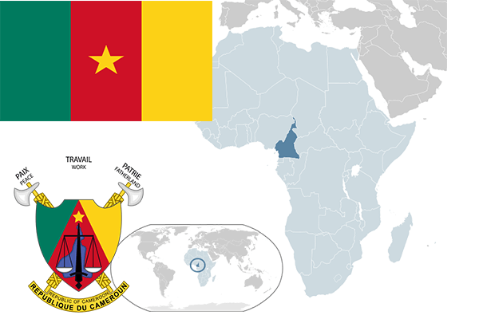

To`liq nomi: Kameron Respublikasi
Region: Markaziy Afrika
Qonunchilik shakli: Respublika
Mustaqillik kuni: 1-yanvar 1960 yil (Fransiyadan)
Poytaxt: Yaunde
Maydoni: 475 442 km² (dunyoda 52 -o`rinda )
Chegaradosh davlatlari: Nigeriya, Chad, markaziy Afrika Respublikasi, Gabon, Ekvaterial Gvineya
Aholisi: 20 549 221 (dunyoda 58-o`rinda, 2013 -yil roʻyxat)
Aholi zichligi: 34 /km²
Aholining o`rtacha yoshi: 52,95 yil ( 53,6 ayollar, 52,3 erkaklar)
Rasmiy tili: fransuz va ingliz tili
Dini: 45% mahalliy dinlar, 35% xristian, 20% musulmon
Pul birligi:Afrika franki
Telefon prefiksi: +237
Internet domen: .cm
Xalqaro tashkilotlarga a`zoligi: BMT (1960 –yildan)
Dengiz va okeanlarga chiqishi: Yo`q
YIM: Butun: $ 32 350 mln, Jon boshiga: $ 2176 (2015 - yil roʻyxati)
Yirik shaharlari: Yaunde, Duala